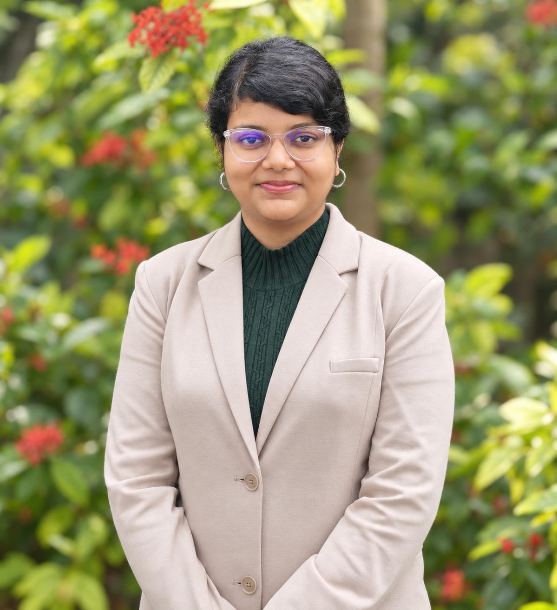

IEEE VIS 2026 Student Volunteer
Selected to support the IEEE Visualization Conference as part of its student volunteer team.

Computer Science Ph.D. Candidate,
Stony Brook University, NY, USA
ripal@cs.stonybrook.edu
Latest updates
Scroll
Selected to support the IEEE Visualization Conference as part of its student volunteer team.
My research poster has been accepted for presentation at the IEEE Visualization Conference.
Awarded by the Hagan Scholarship Foundation for the 2025–2027 period.
Began my Ph.D. in Computer Science at Stony Brook University.
A Classifier for Spinal Tumors Using Novel Data Augmentation appears in the portfolio publication list.
Recognized for Medical Image Segmentation Using Advanced Attention UNet.
Worked in the Visualization and Graphics Lab on neural-network loss landscape visualization using topological data analysis.
Earned my B.Tech. in Information Technology from the A.K.C.S.I.T. Department.
I am a Computer Science Ph.D. candidate at Stony Brook University, working in the Visual Analytics and Imaging Lab with Prof. Klaus Mueller. I build explainable and trustworthy AI for medical imaging, turning advanced models into transparent, controllable, and clinically reliable systems.
My research combines deep learning, computer vision, diffusion models, manifold learning, topological data analysis, and scientific visualization. I currently focus on controllable 3D lung CT synthesis and the geometric analysis of representations learned from real and synthetic medical data.
Previously, I analyzed neural-network loss landscapes at the Indian Institute of Science and developed unsupervised manifold-segmentation methods at the Indian Statistical Institute. I hold a B.Tech. in Information Technology from the University of Calcutta and enjoy translating rigorous AI research into interpretable, dependable, real-world solutions.